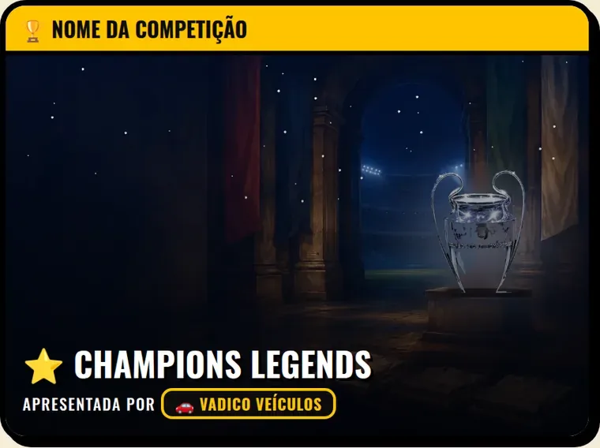
🏆 Nome da competição
"Champions Legends apresentada por…" na abertura e no título da competição. Hoje a Tidex apresenta a Liga Legends da carreira, a Vadico Veículos a Champions e a OittoLabs a Copa dos 8 e a Copa do Brasil.
O Leilão Legends é um jogo de leilão de lendas do futebol. A galera monta o time dando lance, joga a temporada e zoa os amigos ao vivo. A sua marca entra dentro do jogo, onde a partida acontece, e não num banner do lado.
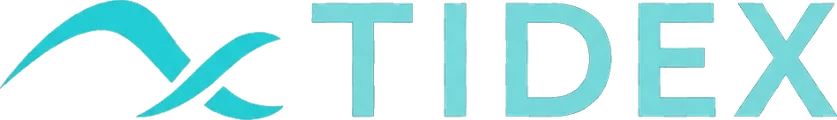
A Tidex apresenta a Liga Legends da carreira, está nas placas do campo, no telão das salas, entre os patrocinadores da carreira e tem tema próprio nas salas. Tudo o que você vê nas fotos abaixo é o jogo de verdade.
vezes que um técnico escolheu o patrocinador do clube na carreira
Uma escolha a cada temporada nova: o técnico olha as marcas, compara o valor e a meta de cada uma e assina com uma delas. Não é um anúncio que passa na tela, é uma decisão. É ali que a sua marca entra.
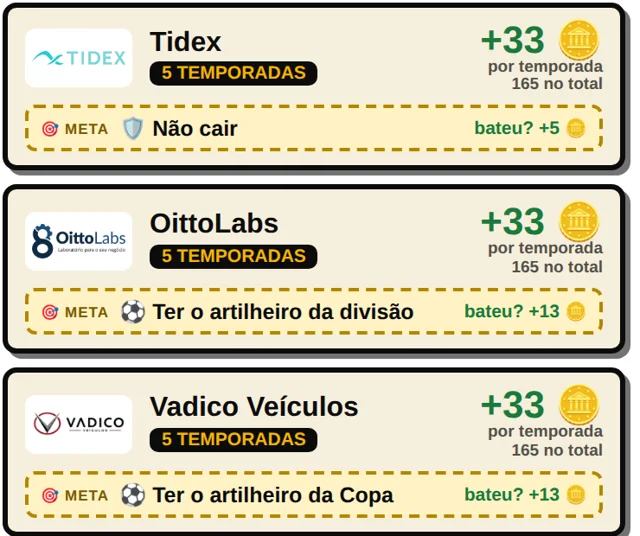
Números contados pelo próprio jogo em 18/10/2026.

"Champions Legends apresentada por…" na abertura e no título da competição. Hoje a Tidex apresenta a Liga Legends da carreira, a Vadico Veículos a Champions e a OittoLabs a Copa dos 8 e a Copa do Brasil.
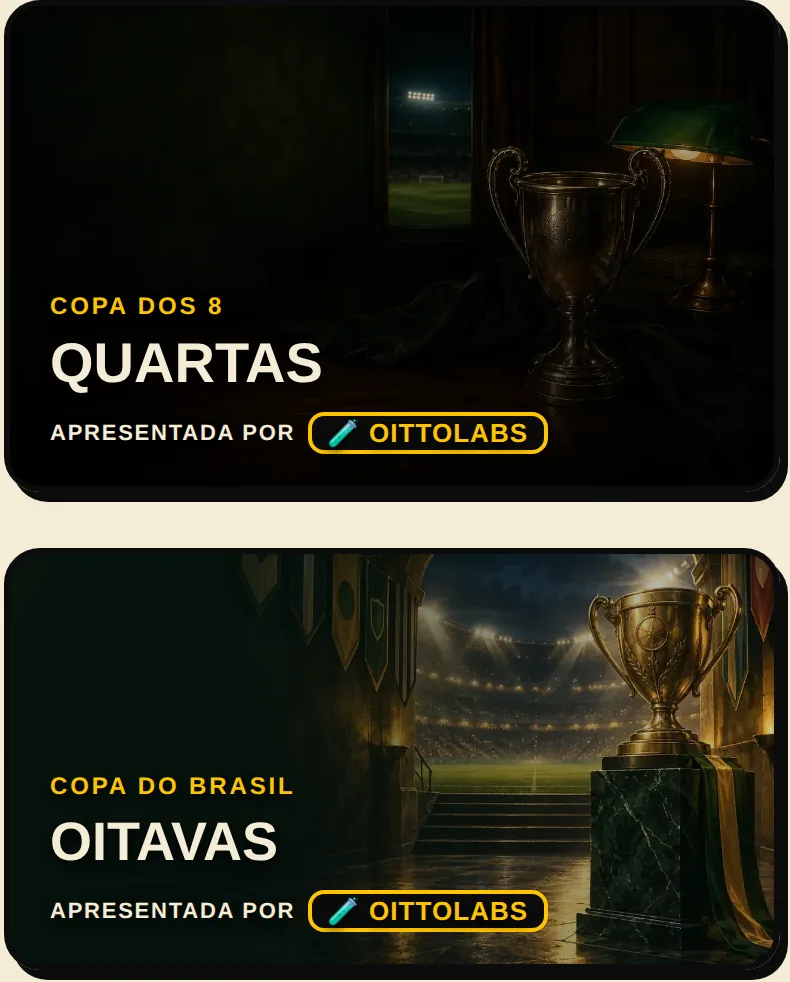
Quartas, semi, final: toda fase abre com a arte da competição e o nome da marca embaixo. A galera vê o nome a cada etapa que avança.
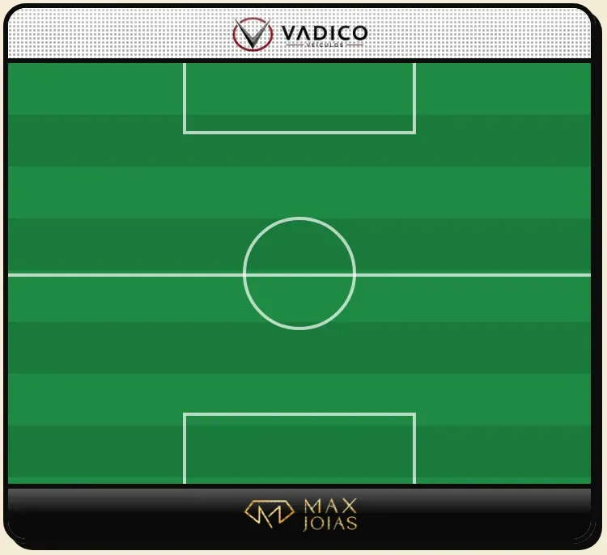
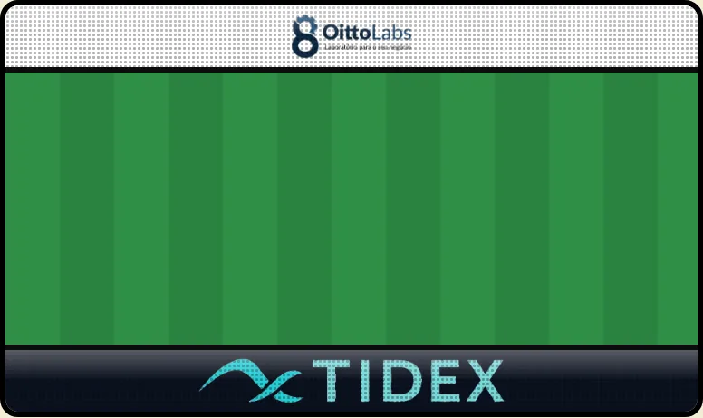
Uma em cima e uma embaixo de cada campinho do leilão, enquanto a galera monta o time. Trocam a cada 7 segundos, e o leilão é a parte do jogo em que todo mundo está de olho na tela.
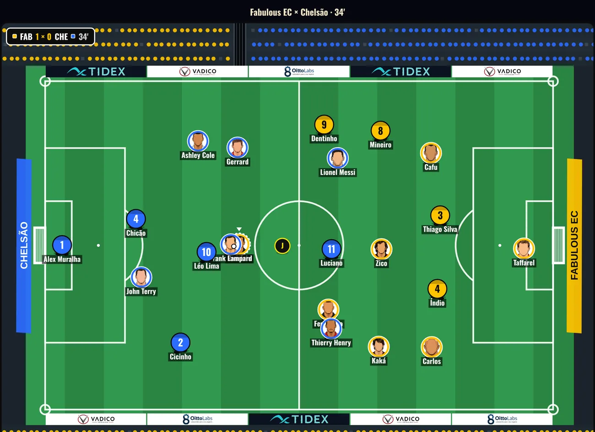
O novo modo de partida mostra o jogo inteiro em campo: 22 jogadores, juiz, torcida e as placas da marca em volta do gramado, a partida toda.
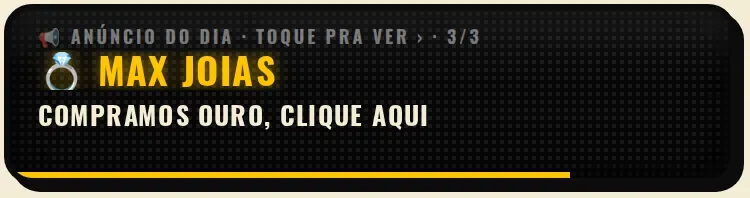
Passa em todas as salas e na carreira. Tem link: quem toca já abre o site ou o WhatsApp da marca. Exemplo no ar: "🤖 Tidex · Sua empresa aparece no ChatGPT? Clique aqui".
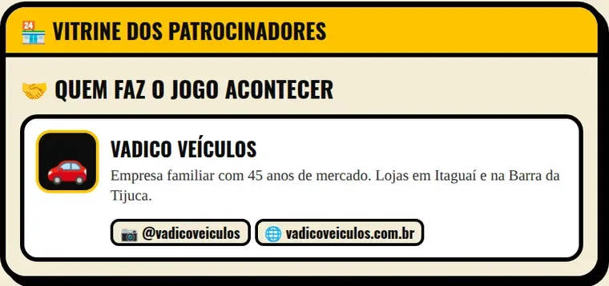
Cartão com logo, texto, Instagram e site da marca, na área dos patrocinadores do jogo.
Na carreira, toda temporada nova o técnico escolhe o patrocinador do clube e assina o contrato. A sua marca entra entre as propostas, com logo, prazo, valor e uma meta. Não é um anúncio que passa: é uma decisão que o jogador toma olhando pra sua marca.
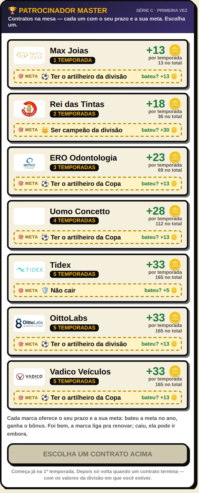
Tidex, OittoLabs e Vadico Veículos já estão entre os contratos, com 5 temporadas de duração.
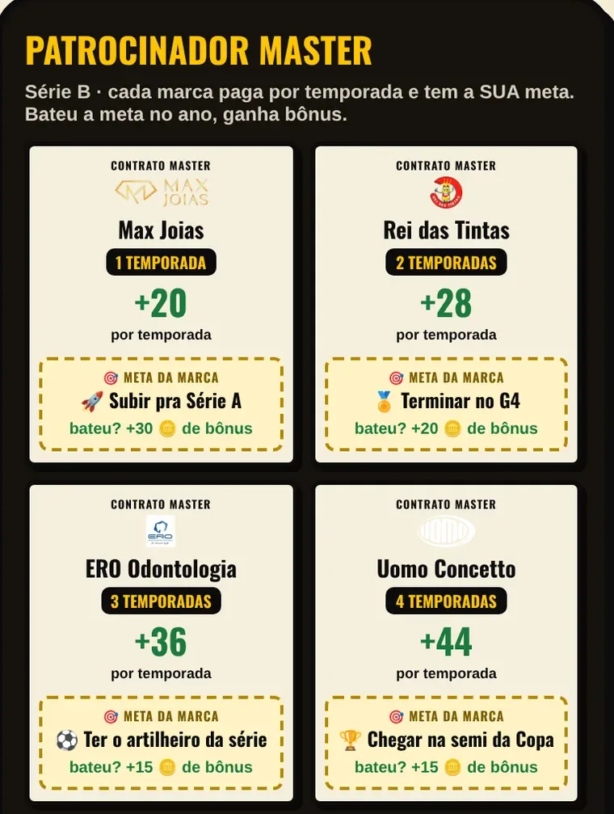
Subir de divisão, ser campeão, ter o artilheiro. Bateu a meta, a marca paga bônus: o jogador torce junto com a marca.
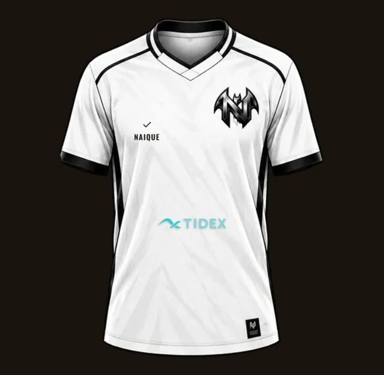
Quem assina com a sua marca leva o logo pro peito da camisa do clube, na loja oficial dentro do jogo.
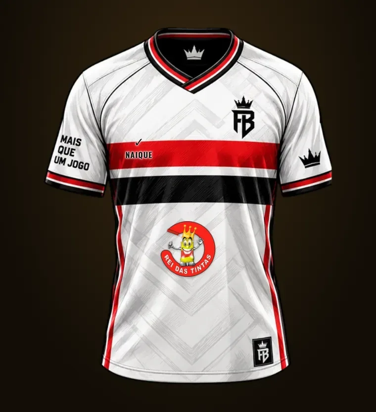
Cada clube tem a sua camisa; a marca do patrocinador entra em todas que assinarem com ela.
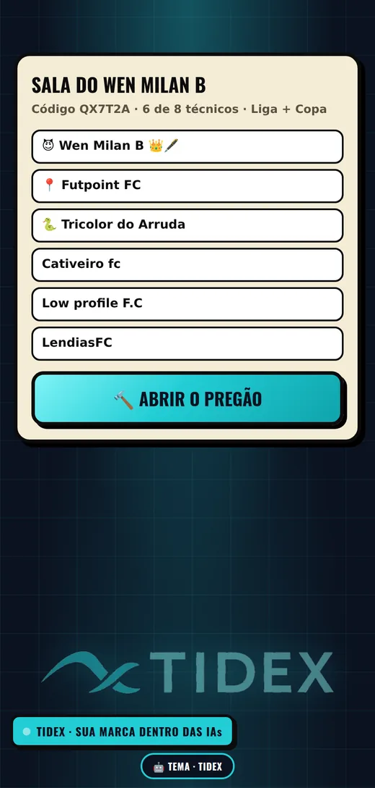
Logo gigante no fundo, cores da marca e a faixa "Tidex · sua marca dentro das IAs". Quem abre a sala com o tema mostra a marca pra todo mundo que entrar.
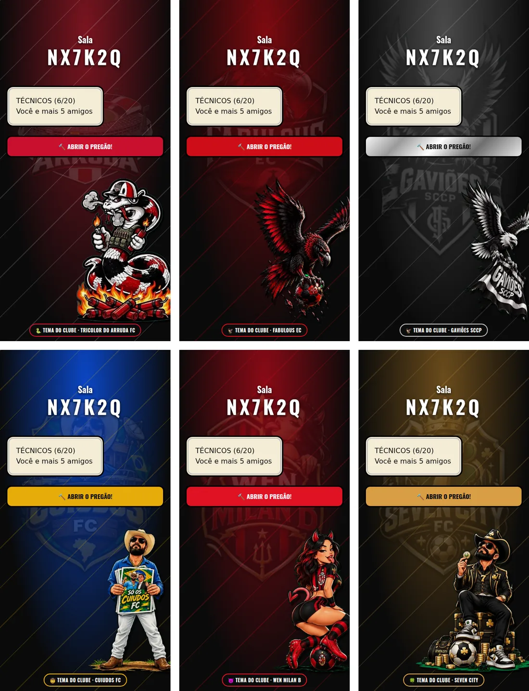
O mesmo recurso que os clubes batizados usam: escudo, mascote e as cores do manto tomando a sala.
O patrocinador ganha um clube batizado, no padrão do plano 🖋 Fundador: escudo, manto e mascote desenhados pra marca, e o clube jogando dentro do jogo.
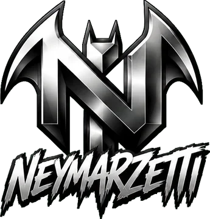
Exemplo: o Neymarzetti, Fundador nº 1. Escudo, manto preto e branco e o Mascarado, que carimba a tela em todo gol do clube.
Além de aparecer dentro do jogo, a marca é apresentada pra quem joga, no padrão visual do Leilão Legends.
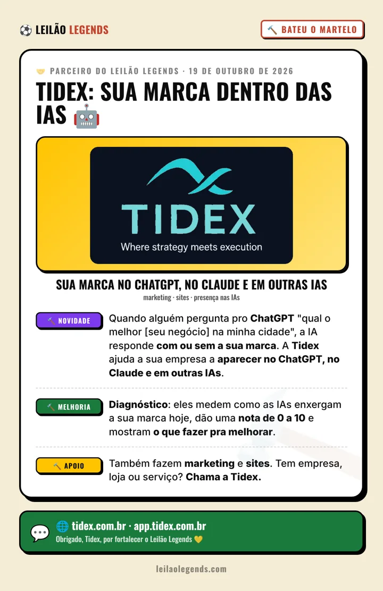
Exemplo: a arte de parceria da Tidex.
Fala com a gente: